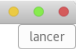

Le menu :
Enregistrer : enregistre le script courant. Si il n'y a pas encore de sauvegarde une fenêtre sélecteur de fichiers apparaît.
Tester : Execute le script dans "/tmp/editest".
Annuler : Revient en arrière et annule la dernière action.
: Revient à la dernière action annulée.
Rechercher : Ouvre la fenêtre de recherche.
Doc : Ouvre le PDF contenant la documentation complete.

Lancer : Lance le scripte. ATTENTION, les fichiers créés ne sont pas temporaires.